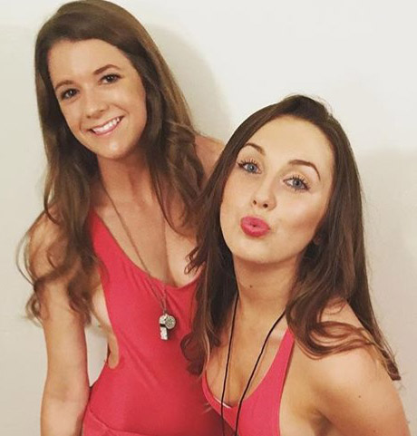

Ciao a tutti! Ragazze, voglio condividere la mia felice notizia - ieri mio marito ha detto che stava pensando al terzo figlio. Ma sei mesi fa eravamo sul punto di divorziare, puoi immaginare. La situazione è stata salvata da un incontro casuale con la mia amica e ... un tubicino di crema anti-età . Ma prima le cose principali.
Il percorso da Beauty Queen a Ugly
Al college ero la ragazza più bella. Le ragazze erano terribilmente gelose : capelli neri ricci, seno di terza taglia, vita stretta, bel viso ... E praticamente non mi truccavo, perché anche durante la sindrome premestruale la mia pelle rimaneva fresca e radiosa, senza un singolo brufolo. I ragazzi erano pazzi per questa bellezza naturale e sono andata ad appuntamenti quasi ogni sera. Ma è come su una pista di pattinaggio, niente di serio.

Ma una volta un ragazzo si è trasferito nel nostro gruppo. Bello e silenzioso, si sedeva sempre nei suoi pensieri, e che peccato, non mi prestò alcuna attenzione. Ma qualcosa è scattato in me! Ho sempre avuto un debole per uomini così duri, quindi ho deciso di agire. Ho cambiato un po ' lo stile dei vestiti e, e invece di gonne che coprivano a malapena il culo, cominciò a indossare lunghi abiti casual, ho iniziato a leggere di più. E quando si è imbattuta in lui a una festa, ho casualmente lanciato una frase al suo scrittore preferito - e abbiamo parlato fino al mattino, senza notare nessuno. E da quel momento in poi non ci siamo mai separati. Sono rimasta sorpresa da quanto fosse appassionato il nostro rapporto, perché a prima vista Roberto era freddo e riservato. Dopo un paio di mesi abbiamo iniziato a vivere insieme, poi il fidanzamento, il matrimonio ... E ora le nostre due piccole copie corrono per il soggiorno: Anita ed Eva.
E tutto sarebbe molto bello, se non fosse per una circostanza - sono cambiata molto. Due congedo di maternità hanno fatto il loro lavoro: il mio seno si afflosciò, la mia girovita scomparve, la mia pelle si deteriorò. A volte, mentre mio marito era al lavoro, aprivo un album con le foto degli studenti e non riuscivo a trattenere le lacrime. Sono allo specchio e io in quelle foto sono due persone diverse. Ho visto che Roberto ha iniziato a trattarmi in modo diverso, rimase più a lungo al lavoro, iniziò a rifiutare il sesso. Non lo biasimo perché anche io non vorrei essere così. Non mi erano rimasti amici, perché all'inizio ero appassionata di Roberto, e quando sono nate le mie figlie, tutte le mie uscite da casa-è una passeggiata con le figlie o al negozio per i dolci. E ad essere sincero, mi vergognerei di incontrare vecchi conoscenti in questa forma ... Ma un giorno, tornando dal negozio con mio marito, abbiamo incontrato il suo collega e lui mi ha scambiato per la madre di Roberto!!! Cosa potrebbe esserci di più umiliante per una donna? Mi sembra che niente di più. E ho deciso di agire.
Ho provato di tutto per non perdere il mio amato
Ho iniziato a fare alcuni esercizi a casa, e con le mie figlie, invece di guardare i cartoni animati, abbiamo iniziato a giocare a pallone o badminton nel parco. Ho anche rivisto la nutrizione. Si è rivelato più facile di quanto pensassi, perché ho sempre cucinato bene e ora puoi trovare molte ricette semplici su Internet. In generale, il peso ha cominciato ad andare via. E in 8 mesi sono tornata al mio stato normale. Certo, gli anni prendono il loro pedaggio e il corpo non era lo stesso come al college. Ho provato con tutte le mie forze a rimuovere la cellulite e in qualche modo a ridurre le smagliature, fino a quando un giorno nel camerino ho visto la mia faccia da vicino. Sì, esattamente: ho visto! perché negli ultimi mesi ho guardato solo le parti del corpo che sono tutte sotto il collo. Dallo specchio, una donna esausta di 50 anni mi guardava-il viso è coperto di rughe e alcune macchie, borse sotto gli occhi, la pelle è flaccida e grigia, anche il contorno del viso è cadente. Sono stato preso alla sprovvista - questo è il risultato di una rapida perdita di peso, o prima ero la stessa, forse, sullo sfondo dell'eccesso di peso, i problemi con il viso non erano così evidenti?
Inorridito, sono scappata dal camerino, senza mai comprare quel lussuoso veste da camera per il quale sono venuta. E, naturalmente, questo è stato il momento perfetto per incontrare un'amica del college: faceva shopping nello stesso negozio di biancheria. Emma non è mai stata bellissima, ma ora sembrava semplicemente meravigliosa, specialmente contro di me. Ne abbiamo parlato, abbiamo ricordato i nostri compagni di classe, ci siamo mostrati le foto dei nostri figli. E, naturalmente, ha chiesto su Roberto. Sospirai e dissi che la sua carriera è andata in salita e sta anche pensando di aprire uno studio privato. Non volevo assolutamente parlare dei nostri problemi familiari, soprattutto considerando che anche lei, a suo tempo, era innamorata di Roberto. E poi ho notato nei suoi occhi stupore e un po 'di pietà. Pietà per me. Questa amica ha chiesto cosa è successo a quella ragazza infuocata che ero al college. E aggiunse che ora mi ha appena riconosciuto.
Le ero grata per la sua onestà, quindi le ho chiesto se avrebbe raccomandato una crema BB densa che nascondesse almeno una parte delle mie rughe. A quanto pare, questo funziona solo su acne e pigmentazione e nessuna base nasconde cambiamenti legati all'età nella pelle. Ma per mia fortuna, Emma ha continuato e ha parlato di un prodotto per la cura che la aiuta a sembrare ancora più bella di 20 anni.
È così che ho imparato a conoscere . Non dirò di averlo ordinato con grande entusiasmo, poiché non credo molto nelle semplici soluzioni a qualsiasi problema, ma non c'era nulla da perdere, perché dopo un paio di mesi mio marito avrà una grande festa aziendale in uscita, con le mogli. Mi ha ispirato la raccomandazione della mia amica e la composizione della crema - acido ialuronico, collagene, ogni sorta di vitamine ... Sembra una crema normale, ma con mia sorpresa, la carnagione è cambiata dopo una settimana di utilizzo. Invece di terrosità : un aspetto fresco e guance rosse. E dopo un mese, le grandi rughe mimiche hanno iniziato a appianarsi e quelle piccole sono scomparse del tutto. Anche la pigmentazione è un ricordo del passato. La mia figlia maggiore, Anita, cominciò a dire che aveva la madre più bella. Ma soprattutto, mio marito ha iniziato a tornare a casa presto dal lavoro e mi ha invitato in date reali. La tanto attesa festa aziendale è andata bene, sembravamo una coppia di Hollywood. Certo, non dimentico Emma e il suo ruolo in tutto questo, perché i suoi consigli mi hanno salvato l'autostima e forse il matrimonio. Abbiamo stabilito una comunicazione con lei e di nuovo andiamo a prendere un caffè e fare shopping, dove scambiamo ogni sorta di segreti di bellezza.

Ragazze, non dimenticate di voi! Crescere i figli, pulire, nutrire il marito è molto importante, Sì. Ma la cosa più importante è rimanere una donna, sexy e con un bagliore negli occhi. Smettete di lavorare come un matto e smettete di sprecare il vostro budget familiare per tutto tranne che per voi stessi. Finalmente compri per te stessa lo stesso abbonamento per ballare o la crema anti-invecchiamento . Quando una donna è bella e felice, tutti ne traggono beneficio!
Ti interessa il tuo aspetto o ti arrendi? Cosa fai dalle procedure di cura?
P.S.: Rispondo alla domanda più comune, ho preso qui, questo è il loro sito ufficiale.
23 commenti
Elisa Morello
Pubblicato 2 ore fa
Faccio un corso di massaggio con un'estetista due volte l'anno. Il risultato è fantastico, ma colpisce davvero il budget ...Forse dovrei ordinare questa crema per me stessa.
Manuela
Pubblicato 4 ore fa
Oh,io conosco . Mia mamma l'ha usato, il risultato è stupendo, sembriamo amiche. Non ne ho ancora bisogno, ma dopo 5 anni, penso che inizierò anche a usarlo, almeno per la prevenzione.
Chiara Mostratisi
Pubblicato 4 ore fa
E la tua amica? non hai rubato tuo marito?
Daniela Maselli
Pubblicato 5 ore fa
Non dire sciocchezze! Ha una famiglia felice, e ora anche io !!
Nicoletta Bernucci
Pubblicato 10 ore fa
Uno strumento meraviglioso! L'ho comprato sei mesi fa, anche con uno sconto. Ha giustificato il suo costo immediatamente, perché stavo per andare sotto i ferri - c'erano borse sotto gli occhi irreale enorme. Ragazze, non ricorrere all'artiglieria pesante se tutto può essere risolto con un solo barattolo!!
Sonia Palma
Pubblicato ieri
Sono curioso, proprio l'altro giorno mi ha parlato di mio collega. E lei è una donna molto spettacolare nei suoi 40 anni! Questo è un segno diretto dall'alto, altrimenti faccio tutte le maschere fatte in casa, ma non ha senso da loro.
Maria Elizabeth Cerece
Pubblicato ieri
Oh, io faccio tutto. E vado da un estetista per le procedure, e compro tutti i tipi di creme costose e non mangio dolci. Sembra che funzioni
Susanna Marchiori
Pubblicato ieri
Sullo sfondo di uno squilibrio ormonale, ho una pigmentazione su tutto il viso, indosso gli occhiali e vado con il trucco completo anche al negozio!! Questo aiuta da tale? Altrimenti, la mia estetista non sa più cosa fare con me. Dove hai ordinato la crema?
Daniela Maselli
Pubblicato ieri
Sì, Susanna, anch'io avevo la faccia macchiata! L'acido ascorbico nella composizione mi ha sbiancato. Ho ordinato qui.
Marisa Del Giudice
Pubblicato ieri
Oh, figli, sì, mio figlio ha detto ieri "Mamma, hai delle strisce così belle sulla fronte". Mi sono svegliato e ho capito che dovevo fare qualcosa con le "strisce". Ed ecco il post nell'argomento.